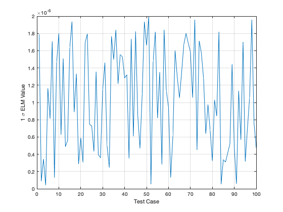
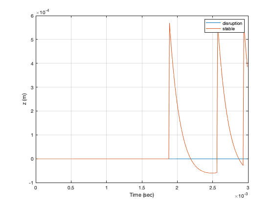
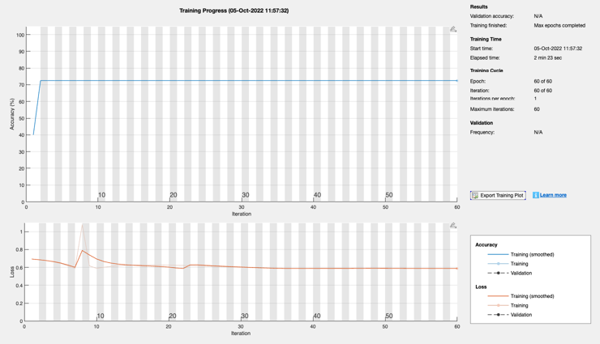

Use LSTM to classify time sequences from the tokamak simulation
Run the simulation mutiple times classifying each run. A disruption occurs when the position exceeds the maximum allowable. Each sequence has one feature, z.
See also: RHSTokamak, ELM, PlotSet, RungeKutta, TimeLabel, trainNetwork, classify
Contents
Constants
d = RHSTokamak; tau1ELM = 6.0e-4; % ELM time constant 1 tau2ELM = 1.7e-4; % ELM time constant 2 kELM = 1.5e-6; % ELM gain matches Figure 2.9 in Reference 2 tRepELM = 48e-3; % ELM repetition time (s) controlOn = true; % Turns on the controller disThresh = 1.6e-6; % This is the threshold for a disruption % The control sampling period and the simulation integration time step dT = 1e-5; % Number of sim steps nSim = 300; % nominally 2000 % Number of tests n = 100; sigma1ELM = 2e-6*abs(rand(1,n)); PlotSet(1:n,sigma1ELM,'x label','Test Case','y label','1 \sigma ELM Value');
Eigenvalues Mode 1 -2.67 Mode 2 115.16
Initial conditions
x = [0;0;0]; % The state of the plasma tRep = 0.001; % Time for the 1st ELM
Design the controller
kControl = QCR( d.aS, d.bS(:,1), eye(2), 1 );
Run n simulations
s = cell(n,1); zData = zeros(1,nSim); % Storage for vertical position for j = 1:n % Run the simulation t = 0; tELM = inf; % Prevents an ELM at the start kELM = sigma1ELM(j); tRep = 0.001; % Time for the 1st ELM for k = 1:nSim if( controlOn ) d.vC = -kControl*x(1:2); else d.vC = 0; %#ok<UNRCH> end d.eLM = ELM( tau1ELM, tau2ELM, kELM, tELM ); tELM = tELM + dT; % Trigger another ELM if( t > tRep + rand*tRepELM ) tELM = 0; tRep = t; end x = RungeKutta( @RHSTokamak, x, t, dT, d ); [~,z] = RHSTokamak( x, t, d ); t = t + dT; zData(1,k) = z; end s{j} = zData; end clear c
Classify the results
j = find(sigma1ELM > disThresh); jN = find(sigma1ELM < disThresh); c(j,1) = 1; c(jN,1) = 0; fprintf('Found %d disruptions and %d stable simulations\n',nnz(j),nnz(jN)) % Plot one example of each type, disrupted and stable [t,tL] = TimeLabel((0:nSim-1)*dT); PlotSet(t,[s{j(1)};s{jN(1)}],'x label',tL,'y label','z (m)','Plot Set',{1:2},'legend',{{'disruption','stable'}});
Found 25 disruptions and 75 stable simulations
Divide into training and testing data
nTrain = floor(0.8*n); % Train on 80% of the cases
xTrain = s(1:nTrain);
yTrain = categorical(c(1:nTrain));
xTest = s(nTrain+1:n);
yTest = categorical(c(nTrain+1:n));
Train the neural net
numFeatures = 1; % Just the plasma position numClasses = 2; % Disruption or non disrupton numHiddenUnits = 200; layers = [ ... sequenceInputLayer(numFeatures) bilstmLayer(numHiddenUnits,'OutputMode','last') fullyConnectedLayer(numClasses) softmaxLayer classificationLayer]; disp(layers) options = trainingOptions('adam', ... 'MaxEpochs',60, ... 'GradientThreshold',2, ... 'Verbose',0, ... 'Plots','training-progress'); net = trainNetwork(xTrain,yTrain,layers,options);
5×1 Layer array with layers:
1 '' Sequence Input Sequence input with 1 dimensions
2 '' BiLSTM BiLSTM with 200 hidden units
3 '' Fully Connected 2 fully connected layer
4 '' Softmax softmax
5 '' Classification Output crossentropyex
 Demonstrate the neural net
Test the network
yPred = classify(net,xTest); % Calculate the classification accuracy of the predictions. acc = sum(yPred == yTest)./numel(yTest); disp('Accuracy') disp(acc);
Accuracy
0.85
Copyright
Copyright (c) 2019, 2022 Princeton Satellite Systems, Inc. All rights reserved.